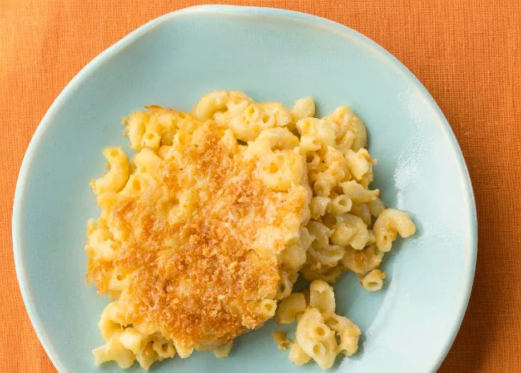

Homemade Mac and Cheese

Mac and Cheese
Description
Make the crowd-pleasing homemade mac and cheese
Ingredients
- Macaroni
- Butter
- Flour
- Milk
- Cheese
Steps
- Boil the noodles: Boil the macaroni in salted water until the noodles are al dente. Drain and transfer to a
prepared baking dish.
- Make the cheese sauce: Melt butter, then whisk in the flour. Whisk in the milk, bring to a simmer, and stir
in the cheeses. Season with salt and pepper and continue simmering until the sauce is thick. Pour the sauce
over the noodles and stir.
- Make the topping: Melt two tablespoons of butter in a skillet, add the bread crumbs, and toast until the
crumbs are brown. Spread the topping over the macaroni and cheese, then sprinkle with paprika.
- Bake the mac and cheese: Bake in the preheated oven until the topping is golden brown.
Back